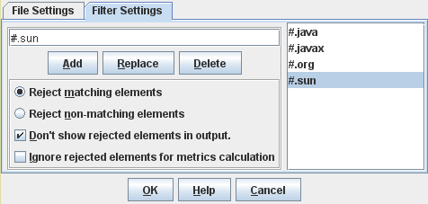

Contents > 4 The SDMetrics User Interface > 4.2 Specifying Project Settings > 4.2.2 Specifying Filters > 4.2.2.3 Filter Dialog
4.2.2.3 Filter Dialog
To open the filter dialog, select "Project -> Edit Project Settings" from
the main menu, or click the  button on the tool bar.
Select the "Filter Settings" tab.
button on the tool bar.
Select the "Filter Settings" tab.

Figure 7: Filter Settings Dialog
The right hand side of the window shows the current list of filters.
To add a new filter to the list, enter the filter string in the text
field on the left side and click the "Add" button (or press the enter or return key).
Click the "Replace" button to
replace the currently selected filter on the list with the contents of
the text field. The "Delete" button removes the currently
selected filter on the list.
The meaning of the radio buttons and checkboxes is as follows:
- "Reject matching elements" - if this option is selected, all
elements that match at least one of the filters will be rejected.
- "Reject non-matching elements" - if this option is selected, all
elements that match none of the filters will be rejected. This is
useful if, for instance, you are only interested in elements of one or
two specific packages.
- "Don't show rejected elements in output" - if the option is
selected, the rejected elements do not appear in any data output (GUI
displays and exported data files). Deselecting this option disables
the filter mechanism.
- "Ignore rejected elements for metrics calculation" - this option
determines the treatment of links from or to rejected
elements. Accepted elements can have all kinds of relationships
(associations, inheritance relationships etc.) with rejected
elements. Whether to count such relationships or not affects for
example coupling and inheritance metrics for the accepted
elements.
By default, this option is deselected. Links to rejected elements are
counted; the measurement values you obtain for the accepted elements
are the same as when the filter mechanism is disabled.
If this option is selected, links to rejected elements are ignored
during metric calculation or rule checking. The measurement values you
obtain will usually be lower than without filters.
To apply the modified filter settings, you need to re-calculate the design metrics by
clicking the  button on
the tool bar.
button on
the tool bar.
| Prev |
Up |
Next |
| Section 4.2.2.2 "Specifying Filters" | Contents | Section 4.2.3 "Saving Project Settings" |